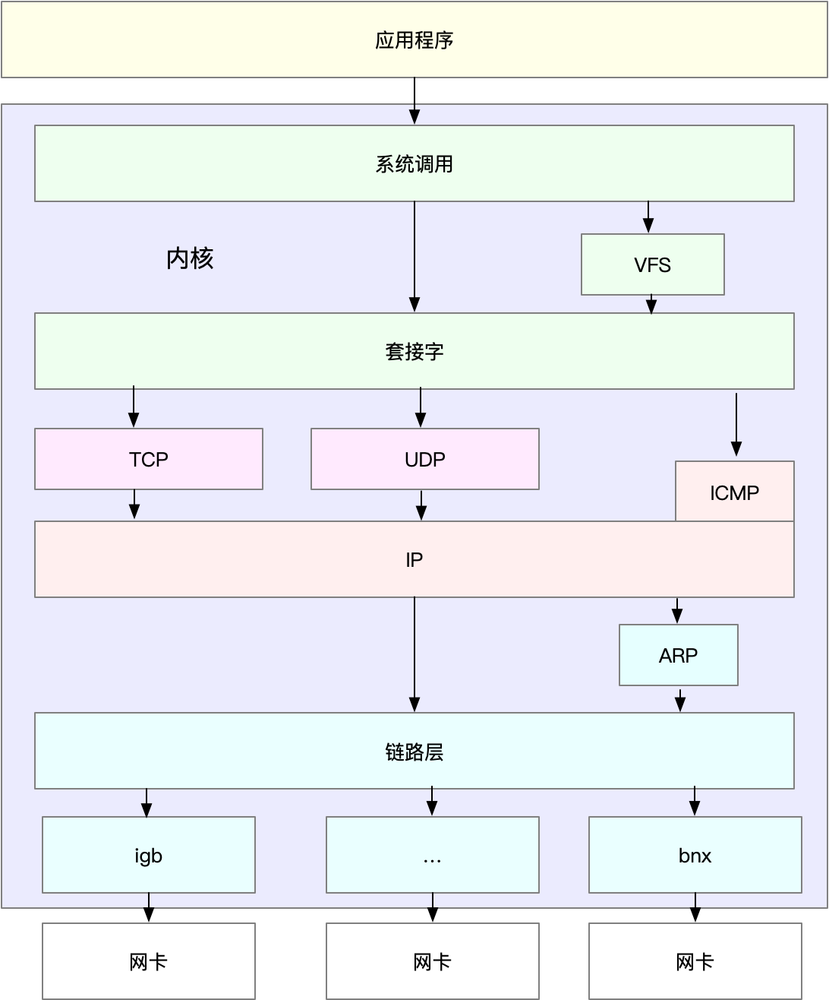
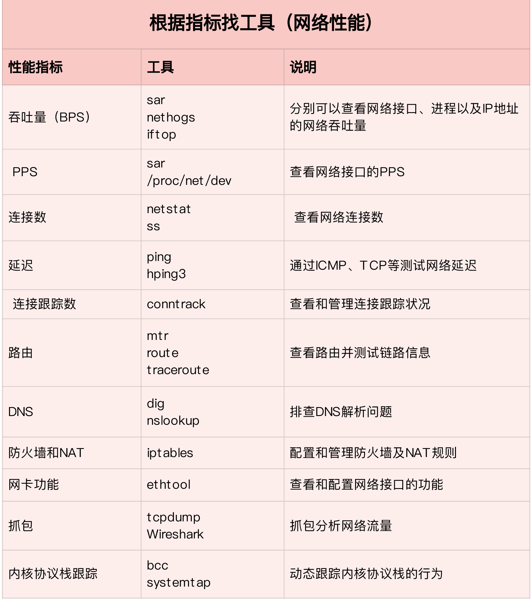
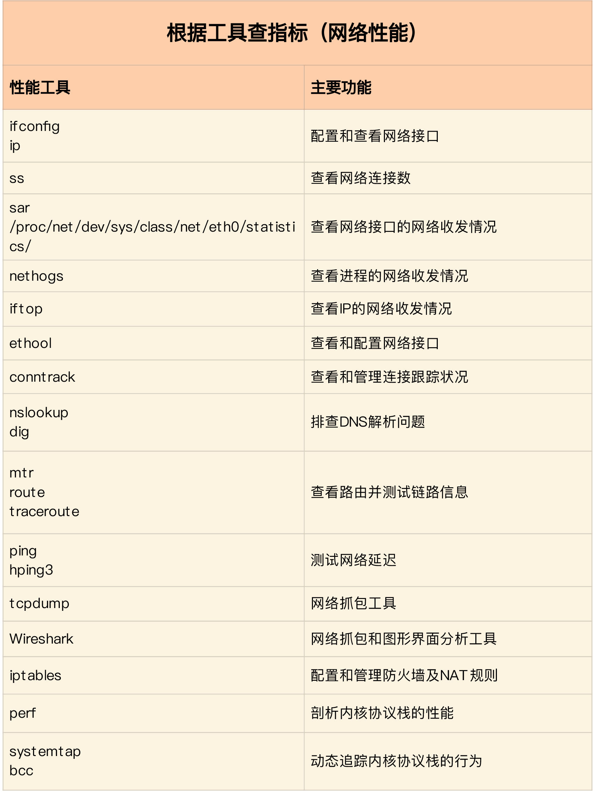
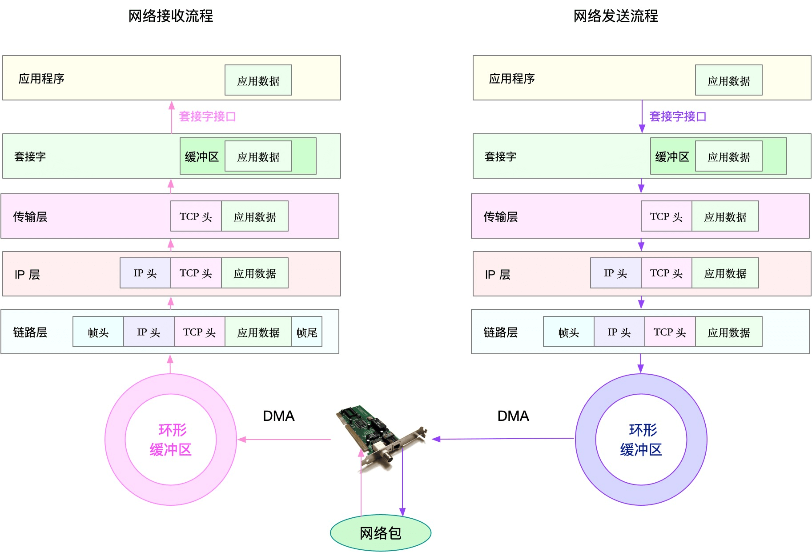
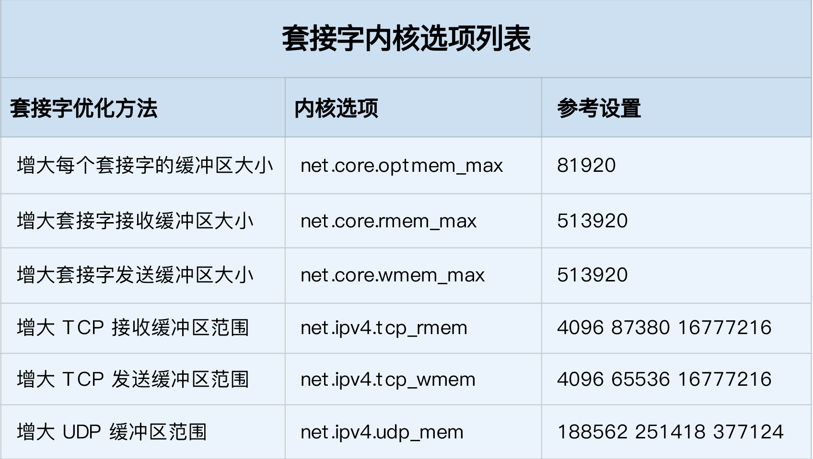

- 00 开篇词 别再让Linux性能问题成为你的绊脚石.md.html
- 01 如何学习Linux性能优化？.md.html
- 02 基础篇：到底应该怎么理解“平均负载”？.md.html
- 03 基础篇：经常说的 CPU 上下文切换是什么意思？（上）.md.html
- 04 基础篇：经常说的 CPU 上下文切换是什么意思？（下）.md.html
- 05 基础篇：某个应用的CPU使用率居然达到100%，我该怎么办？.md.html
- 06 案例篇：系统的 CPU 使用率很高，但为啥却找不到高 CPU 的应用？.md.html
- 07 案例篇：系统中出现大量不可中断进程和僵尸进程怎么办？（上）.md.html
- 08 案例篇：系统中出现大量不可中断进程和僵尸进程怎么办？（下）.md.html
- 09 基础篇：怎么理解Linux软中断？.md.html
- 10 案例篇：系统的软中断CPU使用率升高，我该怎么办？.md.html
- 11 套路篇：如何迅速分析出系统CPU的瓶颈在哪里？.md.html
- 12 套路篇：CPU 性能优化的几个思路.md.html
- 13 答疑（一）：无法模拟出 RES 中断的问题，怎么办？.md.html
- 14 答疑（二）：如何用perf工具分析Java程序？.md.html
- 15 基础篇：Linux内存是怎么工作的？.md.html
- 16 基础篇：怎么理解内存中的Buffer和Cache？.md.html
- 17 案例篇：如何利用系统缓存优化程序的运行效率？.md.html
- 18 案例篇：内存泄漏了，我该如何定位和处理？.md.html
- 19 案例篇：为什么系统的Swap变高了（上）.md.html
- 20 案例篇：为什么系统的Swap变高了？（下）.md.html
- 21 套路篇：如何“快准狠”找到系统内存的问题？.md.html
- 22 答疑（三）：文件系统与磁盘的区别是什么？.md.html
- 23 基础篇：Linux 文件系统是怎么工作的？.md.html
- 24 基础篇：Linux 磁盘I_O是怎么工作的（上）.md.html
- 25 基础篇：Linux 磁盘I_O是怎么工作的（下）.md.html
- 26 案例篇：如何找出狂打日志的“内鬼”？.md.html
- 27 案例篇：为什么我的磁盘I_O延迟很高？.md.html
- 28 案例篇：一个SQL查询要15秒，这是怎么回事？.md.html
- 29 案例篇：Redis响应严重延迟，如何解决？.md.html
- 30 套路篇：如何迅速分析出系统I_O的瓶颈在哪里？.md.html
- 31 套路篇：磁盘 I_O 性能优化的几个思路.md.html
- 32 答疑（四）：阻塞、非阻塞 I_O 与同步、异步 I_O 的区别和联系.md.html
- 33 关于 Linux 网络，你必须知道这些（上）.md.html
- 34 关于 Linux 网络，你必须知道这些（下）.md.html
- 35 基础篇：C10K 和 C1000K 回顾.md.html
- 36 套路篇：怎么评估系统的网络性能？.md.html
- 37 案例篇：DNS 解析时快时慢，我该怎么办？.md.html
- 38 案例篇：怎么使用 tcpdump 和 Wireshark 分析网络流量？.md.html
- 39 案例篇：怎么缓解 DDoS 攻击带来的性能下降问题？.md.html
- 40 案例篇：网络请求延迟变大了，我该怎么办？.md.html
- 41 案例篇：如何优化 NAT 性能？（上）.md.html
- 42 案例篇：如何优化 NAT 性能？（下）.md.html
- 43 套路篇：网络性能优化的几个思路（上）.md.html
- 44 套路篇：网络性能优化的几个思路（下）.md.html
- 45 答疑（五）：网络收发过程中，缓冲区位置在哪里？.md.html
- 46 案例篇：为什么应用容器化后，启动慢了很多？.md.html
- 47 案例篇：服务器总是时不时丢包，我该怎么办？（上）.md.html
- 48 案例篇：服务器总是时不时丢包，我该怎么办？（下）.md.html
- 49 案例篇：内核线程 CPU 利用率太高，我该怎么办？.md.html
- 50 案例篇：动态追踪怎么用？（上）.md.html
- 51 案例篇：动态追踪怎么用？（下）.md.html
- 52 案例篇：服务吞吐量下降很厉害，怎么分析？.md.html
- 53 套路篇：系统监控的综合思路.md.html
- 54 套路篇：应用监控的一般思路.md.html
- 55 套路篇：分析性能问题的一般步骤.md.html
- 56 套路篇：优化性能问题的一般方法.md.html
- 57 套路篇：Linux 性能工具速查.md.html
- 58 答疑（六）：容器冷启动如何性能分析？.md.html
- 加餐（一） 书单推荐：性能优化和Linux 系统原理.md.html
- 加餐（二） 书单推荐：网络原理和 Linux 内核实现.md.html
- 用户故事 “半路出家 ”，也要顺利拿下性能优化！.md.html
- 用户故事 运维和开发工程师们怎么说？.md.html
- 结束语 愿你攻克性能难关.md.html
- 捐赠
43 套路篇：网络性能优化的几个思路（上）
你好，我是倪朋飞。
上一节，我们了解了NAT（网络地址转换）的原理，学会了如何排查 NAT 带来的性能问题，最后还总结了 NAT 性能优化的基本思路。我先带你简单回顾一下。
NAT 基于 Linux 内核的连接跟踪机制，实现了 IP 地址及端口号重写的功能，主要被用来解决公网 IP 地址短缺的问题。
在分析 NAT 性能问题时，可以先从内核连接跟踪模块 conntrack 角度来分析，比如用 systemtap、perf、netstat 等工具，以及 proc 文件系统中的内核选项，来分析网络协议栈的行为；然后，通过内核选项调优、切换到无状态 NAT、使用 DPDK 等方式，进行实际优化。
通过前面的学习，你应该已经体会到，网络问题比我们前面学过的 CPU、内存或磁盘 I/O 都要复杂。无论是应用层的各种 I/O 模型，冗长的网络协议栈和众多的内核选项，抑或是各种复杂的网络环境，都提高了网络的复杂性。
不过，也不要过分担心，只要你掌握了 Linux 网络的基本原理和常见网络协议的工作流程，再结合各个网络层的性能指标来分析，你会发现，定位网络瓶颈并不难。
找到网络性能瓶颈后，下一步要做的就是优化了，也就是如何降低网络延迟，并提高网络的吞吐量。学完相关原理和案例后，我就来讲讲，优化网络性能问题的思路和一些注意事项。
由于网络优化思路的内容比较多，我们分两节来学习，今天我们先来看上篇。
确定优化目标
跟 CPU 和 I/O 方面的性能优化一样，优化前，我会先问问自己，网络性能优化的目标是什么？换句话说，我们观察到的网络性能指标，要达到多少才合适呢？
实际上，虽然网络性能优化的整体目标，是降低网络延迟（如 RTT）和提高吞吐量（如 BPS 和 PPS），但具体到不同应用中，每个指标的优化标准可能会不同，优先级顺序也大相径庭。
就拿上一节提到的 NAT 网关来说，由于其直接影响整个数据中心的网络出入性能，所以 NAT 网关通常需要达到或接近线性转发，也就是说， PPS 是最主要的性能目标。
再如，对于数据库、缓存等系统，快速完成网络收发，即低延迟，是主要的性能目标。
而对于我们经常访问的 Web 服务来说，则需要同时兼顾吞吐量和延迟。
所以，为了更客观合理地评估优化效果，我们首先应该明确优化的标准，即要对系统和应用程序进行基准测试，得到网络协议栈各层的基准性能。
在 怎么评估系统的网络性能 中，我已经介绍过，网络性能测试的方法。简单回顾一下，Linux 网络协议栈，是我们需要掌握的核心原理。它是基于 TCP/IP 协议族的分层结构，我用一张图来表示这个结构。

明白了这一点，在进行基准测试时，我们就可以按照协议栈的每一层来测试。由于底层是其上方各层的基础，底层性能也就决定了高层性能。所以我们要清楚，底层性能指标，其实就是对应高层的极限性能。我们从下到上来理解这一点。
首先是网络接口层和网络层，它们主要负责网络包的封装、寻址、路由，以及发送和接收。每秒可处理的网络包数 PPS，就是它们最重要的性能指标（特别是在小包的情况下）。你可以用内核自带的发包工具 pktgen ，来测试 PPS 的性能。
再向上到传输层的 TCP 和 UDP，它们主要负责网络传输。对它们而言，吞吐量（BPS）、连接数以及延迟，就是最重要的性能指标。你可以用 iperf 或 netperf ，来测试传输层的性能。
不过要注意，网络包的大小，会直接影响这些指标的值。所以，通常，你需要测试一系列不同大小网络包的性能。
最后，再往上到了应用层，最需要关注的是吞吐量（BPS）、每秒请求数以及延迟等指标。你可以用 wrk、ab 等工具，来测试应用程序的性能。
不过，这里要注意的是，测试场景要尽量模拟生产环境，这样的测试才更有价值。比如，你可以到生产环境中，录制实际的请求情况，再到测试中回放。
总之，根据这些基准指标，再结合已经观察到的性能瓶颈，我们就可以明确性能优化的目标。
网络性能工具
同前面学习一样，我建议从指标和工具两个不同维度出发，整理记忆网络相关的性能工具。
第一个维度，从网络性能指标出发，你更容易把性能工具同系统工作原理关联起来，对性能问题有宏观的认识和把握。这样，当你想查看某个性能指标时，就能清楚知道，可以用哪些工具。
这里，我把提供网络性能指标的工具，做成了一个表格，方便你梳理关系和理解记忆。你可以把它保存并打印出来，随时查看。当然，你也可以把它当成一个“指标工具”指南来使用。

再来看第二个维度，从性能工具出发。这可以让你更快上手使用工具，迅速找出想要观察的性能指标。特别是在工具有限的情况下，我们更要充分利用好手头的每一个工具，用少量工具也要尽力挖掘出大量信息。
同样的，我也将这些常用工具，汇总成了一个表格，方便你区分和理解。自然，你也可以当成一个“工具指标”指南使用，需要时查表即可。

网络性能优化
总的来说，先要获得网络基准测试报告，然后通过相关性能工具，定位出网络性能瓶颈。再接下来的优化工作，就是水到渠成的事情了。
当然，还是那句话，要优化网络性能，肯定离不开 Linux 系统的网络协议栈和网络收发流程的辅助。你可以结合下面这张图再回忆一下这部分的知识。

接下来，我们就可以从应用程序、套接字、传输层、网络层以及链路层等几个角度，分别来看网络性能优化的基本思路。
应用程序
应用程序，通常通过套接字接口进行网络操作。由于网络收发通常比较耗时，所以应用程序的优化，主要就是对网络 I/O 和进程自身的工作模型的优化。
相关内容，其实我们在 C10K 和 C1000K 回顾 的文章中已经学过了。这里我们简单回顾一下。
从网络 I/O 的角度来说，主要有下面两种优化思路。
第一种是最常用的 I/O 多路复用技术 epoll，主要用来取代 select 和 poll。这其实是解决 C10K 问题的关键，也是目前很多网络应用默认使用的机制。
第二种是使用异步 I/O（Asynchronous I/O，AIO）。AIO 允许应用程序同时发起很多 I/O 操作，而不用等待这些操作完成。等到 I/O完成后，系统会用事件通知的方式，告诉应用程序结果。不过，AIO 的使用比较复杂，你需要小心处理很多边缘情况。
而从进程的工作模型来说，也有两种不同的模型用来优化。
第一种，主进程+多个 worker 子进程。其中，主进程负责管理网络连接，而子进程负责实际的业务处理。这也是最常用的一种模型。
第二种，监听到相同端口的多进程模型。在这种模型下，所有进程都会监听相同接口，并且开启 SO_REUSEPORT 选项，由内核负责，把请求负载均衡到这些监听进程中去。
除了网络 I/O 和进程的工作模型外，应用层的网络协议优化，也是至关重要的一点。我总结了常见的几种优化方法。
使用长连接取代短连接，可以显著降低 TCP 建立连接的成本。在每秒请求次数较多时，这样做的效果非常明显。
使用内存等方式，来缓存不常变化的数据，可以降低网络 I/O 次数，同时加快应用程序的响应速度。
使用 Protocol Buffer 等序列化的方式，压缩网络 I/O 的数据量，可以提高应用程序的吞吐。
使用 DNS 缓存、预取、HTTPDNS 等方式，减少 DNS 解析的延迟，也可以提升网络 I/O 的整体速度。
套接字
套接字可以屏蔽掉 Linux 内核中不同协议的差异，为应用程序提供统一的访问接口。每个套接字，都有一个读写缓冲区。
读缓冲区，缓存了远端发过来的数据。如果读缓冲区已满，就不能再接收新的数据。
写缓冲区，缓存了要发出去的数据。如果写缓冲区已满，应用程序的写操作就会被阻塞。
所以，为了提高网络的吞吐量，你通常需要调整这些缓冲区的大小。比如：
增大每个套接字的缓冲区大小 net.core.optmem_max；
增大套接字接收缓冲区大小 net.core.rmem_max 和发送缓冲区大小 net.core.wmem_max；
增大 TCP 接收缓冲区大小 net.ipv4.tcp_rmem 和发送缓冲区大小 net.ipv4.tcp_wmem。
至于套接字的内核选项，我把它们整理成了一个表格，方便你在需要时参考：

不过有几点需要你注意。
tcp_rmem 和 tcp_wmem 的三个数值分别是 min，default，max，系统会根据这些设置，自动调整TCP接收/发送缓冲区的大小。
udp_mem 的三个数值分别是 min，pressure，max，系统会根据这些设置，自动调整UDP发送缓冲区的大小。
当然，表格中的数值只提供参考价值，具体应该设置多少，还需要你根据实际的网络状况来确定。比如，发送缓冲区大小，理想数值是吞吐量*延迟，这样才可以达到最大网络利用率。
除此之外，套接字接口还提供了一些配置选项，用来修改网络连接的行为：
为 TCP 连接设置 TCP_NODELAY 后，就可以禁用 Nagle 算法；
为 TCP 连接开启 TCP_CORK 后，可以让小包聚合成大包后再发送（注意会阻塞小包的发送）；
使用 SO_SNDBUF 和 SO_RCVBUF ，可以分别调整套接字发送缓冲区和接收缓冲区的大小。
小结
今天，我们一起梳理了常见的 Linux 网络性能优化方法。
在优化网络性能时，你可以结合 Linux 系统的网络协议栈和网络收发流程，然后从应用程序、套接字、传输层、网络层再到链路层等，进行逐层优化。
当然，其实我们分析、定位网络瓶颈，也是基于这些进行的。定位出性能瓶颈后，就可以根据瓶颈所在的协议层进行优化。比如，今天我们学了应用程序和套接字的优化思路：
在应用程序中，主要优化 I/O 模型、工作模型以及应用层的网络协议；
在套接字层中，主要优化套接字的缓冲区大小。
而其他各个网络层的优化方法，建议你先自己想一想，下一节，我们再来一起总结。
思考
最后，我想邀请你一起来聊聊，你在碰到网络的性能问题时，是怎么解决的？你可以结合今天的内容，从应用程序、套接字等方面，来总结自己的思路。
欢迎在留言区和我讨论，也欢迎把这篇文章分享给你的同事、朋友。我们一起在实战中演练，在交流中进步。
© 2019 - 2023 Liangliang Lee. Powered by gin and hexo-theme-book.